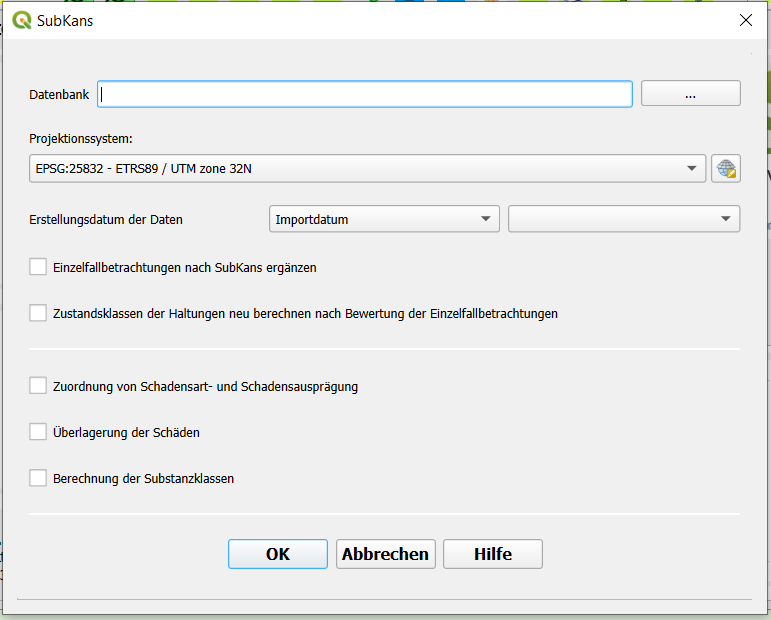

SubKans
Mit der Funktion SubKans kann eine Substanzklassifizierung surchgeführt werden.
{kind=link}
Datenbank
Hier wird die Datenbank ausgewählt, mit der die Zustandsklassifizierung durchgeführt werden soll.
Auswahl der Daten nach
Damit nicht für alle Daten in der Datenbank eine Zustandsklassifizierung durchgeführt wird, gibt es die Auswahlmöglichkeiten „Importdatum“ und „Befahrungsdatum“. Bei der Auswahl „Importdatum“ werden nur Daten berücksichtigt die an dem Zeitpunkt der ausgewählt wird importiert wurden. Bei der Auswahl „Befahrungsdatum“ werden aus der Datenbank alle vorhanden Befahrungsdaten ausgewählt und angezeigt. Aus diesen Daten kann dann ein Datum für die Zustandsklassifizierung ausgewählt werden.
Auswahlmöglichkeiten
Die folgenden Schritte können mit dem Tool SubKans durchgeführt werden. 1. Einzelfallbetrachtungen nach SubKans ergänzen 2. Zustandsklassen der Haltungen neu berechenn nach Bewertung den Einzelfallbetrachtungen 3. Zuordnung von Schadensart- und Schadensausprägung 4. Überlagerung der Schäden 5. Berechnung der Substanzklasse
Mit dem Schrit 1 findet eine Ergänzung der Zustandsklassifizierung statt, bei dieser wird der Datenbestand auf fehlende Zustandsklassen geprüft und ergänzt. Der Schritt 2 sollte im Anschluss durchgeführt werden, damit die neue Klassifizierung der einzelnen Schäden auch in die Tabelle Ahltungen übertragen wird. Die Schritte 3-5 beinhalten nacheinander die komplette Substanzklassifizierung. Zuerst wird dabei jedem Schaden eine Schadensart- und Schadensausprägung zugewiesen. Als nächstes findet die Überlagerung der einzelnen Schäden statt, sodass im letzten Schritt die Abnutzung der Haltung und die Substanzklasse ermittelt werden können.